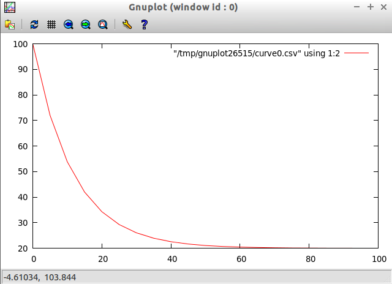

Applications
Table of Contents
1 Applications
1.1 Mathematics
Trigonometric Degree Functions
deg2rad deg = deg*pi/180.0 -- convert degrees to radians rad2deg rad = rad*180.0/pi -- convert radians to degrees sind = sin . deg2rad cosd = cos . deg2rad tand = tan . deg2rad atand = rad2deg . atan atan2d y x = rad2deg (atan2 y x )
Example:
> map rad2deg [pi/6, pi/4, pi/3, pi/2, pi] [29.999999999999996,45.0,59.99999999999999,90.0,180.0] > > > map sind [30.0, 45.0, 60.0, 90.0, 180.0 ] [0.49999999999999994,0.7071067811865475,0.8660254037844386,1.0,1.2246063538223773e-16] >
1.2 Piecewise Functions
Implement the following functions in Haskell
/ 0.10 if 0.0 <= x <= 7150.0
| 0.15 if 7150.0 < x <= 29050.0
| 0.25 if 29050.0 < x <= 70350.0
f1(x)= | 0.28 if 70350.0 < x <= 146750.0
| 0.33 if 146750.0 < x <= 319100.0
\ 0.35 if 139100.0 < x < +infinitum
/ x^2 - 1 if x < 0
f2(x) = | x - 1 if 0 <= x < 4
\ 3 if x > 4
import Graphics.Gnuplot.Simple (|>) x f = f x (|>>) x f = map f x pairs xs = zip xs (tail xs) infp = 1.0e30 -- Plus Infinite infm = (-1.0e30) -- Minus Infinite inInterval x (p1, p2) = (fst p1) < x && x <= (fst p2) piecewiseFactory intervalTable x = f x where f = filter (inInterval x) (pairs intervalTable) |> head |> fst |> snd arange start stop step = [start,(start+step)..(stop-step)] plotFxs f xs = do let ys = map f xs plotList [] (zip xs ys) f1_table = [ (0.0, const 0.10), (7150.0, const 0.15), (29050.0, const 0.25), (70350.0, const 0.28), (146750.0, const 0.33), (319100.0, const 0.35), (1.0e30, const 0.35) ] f2_table = [ (infm, \x -> x**2 - 1), -- if -∞ < x <= 0 -> x^2 - 1 (0.0, \x -> x - 1.0 ), -- if 0 < x <= 4 -> x - 1 (4.0, \x -> 3.0), -- if 4 < x <= +∞ -> 3.0 (infp, \x -> 3.0 ) ] f1 = piecewiseFactory f1_table f2 = piecewiseFactory f2_table
> plotFxs f1 $ arange (1.0) 400000 1000.0
!f1 chart
> plotFxs f2 $ arange (-4) 4 0.01
!f2 chart
1.3 Numerical Methods
1.3.1 Polynomial
Polynomial evaluation by the horner method.
polyval :: Fractional a => [a] -> a -> a polyval coeffs x = foldr (\b c -> b + x*c) 0 coeffs polyderv :: Fractional a => [a] -> [a] polyderv coeffs = zipWith (*) (map fromIntegral [1..n]) (tail coeffs ) where n = (length coeffs) - 1
Example:
Reference: http://www.math10.com/en/algebra/horner.html
f(x) = a0 + a1x + a2x2 + a3x3 + a4x4 + a5x5
f(x0) = a0 + x0(a1 + x0(a2 + x0(a3 + x0(a4 + a5x0))))
Example: Evaluate the polynomial
f(x) = 1x4 + 3x3 + 5x2 + 7x + 9 at x = 2
df(x) = 3x3 + 6x2 + 10x + 7
> let coeffs = [9.0, 7.0, 5.0, 3.0, 1.0] > let f = polyval coeffs let df = polyval $ polyderv coeffs > polyderv coeffs [7.0,10.0,9.0,4.0] > f 2 83.0 > df 2 95.0 > (\x -> 7 + 10*x + 9*x^2 + 4*x^3) 2 95
1.3.2 Numerical Derivate
derv dx f x = (f(x+dx) - f(x))/dx f x = 2*x**2 - 2*x df = derv 1e-5 f *Main> map f [2, 3, 4, 5] [4.0,12.0,24.0,40.0] *Main> *Main> let df = derv 1e-5 f *Main> *Main> map df [2, 3, 4, 5] [6.000020000040961,10.000019999978349,14.000019999116374,18.000019998964945] *Main> *Main> let dfx x = 4*x - 2 *Main> map dfx [2, 3, 4, 5] [6,10,14,18]
1.3.3 Nonlinear Equation - Root-finding
See also:
Bisection Method
bisection_iterator :: (Floating a, Floating a1, Ord a1) => (a -> a1) -> [a] -> [a] bisection_iterator f guesslist = newguess where a = guesslist !! 0 b = guesslist !! 1 c = (a+b)/2.0 p = f(a)*f(c) newguess = (\p -> if p < 0.0 then [a, c] else [c, b] ) p bisectionSolver eps itmax f x1 x2 = (root, error, iterations) where bisection_error xlist = abs(f $ xlist !! 1) check_error xlist = bisection_error xlist > eps iterator = bisection_iterator f rootlist = [x1, x2] |> iterate iterator |> takeWhile check_error |> take itmax pair = last rootlist |> iterator root = last pair error = bisection_error pair iterations = length rootlist *Main> let f x = exp(-x) -3*log(x) *Main> bisectionSolver 1e-5 100 f 0.05 3 (1.1154509544372555,8.86237816760671e-6,19) *Main>
Newton Raphson Method
{- Newton-Raphson Method Iterator, builds an iterator function from the function to be solved and its derivate. -} newton_iterator f df x = x - f(x)/df(x) {--------------------------------------------------------------------- newtonSolver(eps, itmax, f, df, guess) Solve equation using the Newton-Raphson Method. params: eps : Tolerance of the solver itmax : Maximum number of iterations f : Function which the root will be computed df : Derivate of the function guess : Initial guess newtonSolver :: (Fractional t, Ord t) => t -> Int -> (t -> t) -> (t -> t) -> t -> (t, t, Int) ----------------------------------------------------------------------- -} newtonSolver :: (Floating t, Ord t) => t -> Int -> (t -> t) -> (t -> t) -> t -> (t, t, Int) newtonSolver eps itmax f df guess = (root, error, iterations) where check_root x = abs(f(x)) > eps iterator = newton_iterator f df -- Builds the Newton Iterator generator = iterate $ iterator -- Infinite List that will that holds the roots (Lazy Evaluation) rootlist = take itmax $ takeWhile check_root $ generator guess root = iterator $ last $ rootlist error = abs(f(root)) iterations = length rootlist square_root a | a > 0 = newtonSolver 1e-6 50 (\x -> x^2 -a) (\x -> 2*x) a | otherwise = error ("The argument must be positive") {- Solve f(x) = x^2 - 2 = 0 The solution is sqrt(2) -} > let f x = x^2 - 2.0 > > let df x = 2*x > > let df x = 2.0*x > > newtonSolver 1e-3 100 f df 5 (1.414470981367771,7.281571315052027e-4,4) > > newtonSolver 1e-3 100 f df 50 (1.4142150098491113,4.094082521888254e-6,8) >
Secant Method
(|>) x f = f x (|>>) x f = map f x secant_iterator :: Floating t => (t -> t) -> [t] -> [t] secant_iterator f guesslist = [x, xnext] where x = guesslist !! 0 x_ = guesslist !! 1 xnext = x - f(x)*(x-x_)/(f(x) - f(x_)) secantSolver eps itmax f x1 x2 = (root, error, iterations) where secant_error xlist = abs(f $ xlist !! 1) check_error xlist = secant_error xlist > eps iterator = secant_iterator f rootlist = [x1, x2] |> iterate iterator |> takeWhile check_error |> take itmax pair = last rootlist |> iterator root = last pair error = secant_error pair iterations = length rootlist *Main> let f x = x^2 - 2.0 *Main> secantSolver 1e-4 20 f 2 3 (1.4142394822006472,7.331301515467459e-5,6) *Main> *Main> let f x = exp(x) - 3.0*x^2 *Main> secantSolver 1e-5 100 f (-2.0) 3.0 (-0.458964305393305,6.899607281729558e-6,24) *Main>
1.3.4 Differential Equations
Euler Method
The task is to implement a routine of Euler's method and then to use it to solve the given example of Newton's cooling law with it for three different step sizes of 2 s, 5 s and 10 s and to compare with the analytical solution. The initial temperature T0 shall be 100 °C, the room temperature TR 20 °C, and the cooling constant k 0.07. The time interval to calculate shall be from 0 s to 100 s
From: http://rosettacode.org/wiki/Euler_method
Solve differential equation by the Euler's Method.
T(t)
---- = -k(T(t) - Tr)
dt
T(t) = Tr + k(T0(t) - Tr).exp(-k*t)
import Graphics.Gnuplot.Simple eulerStep f step (x, y)= (xnew, ynew) where xnew = x + step ynew = y + step * (f (x, y)) euler :: ((Double, Double) -> Double) -> Double -> Double -> Double -> Double -> [(Double, Double)] euler f x0 xf y0 step = xypairs where iterator = iterate $ eulerStep f step xypairs = takeWhile (\(x, y) -> x <= xf ) $ iterator (x0, y0) > let dTemp k temp_r (t, temp) = -k*(temp - temp_r) > euler (dTemp 0.07 20.0) 0.0 100.0 100.0 5.0 [(0.0,100.0),(5.0,72.0),(10.0,53.8),(15.0,41.97) \.\.\. (100.0,20.01449963666907)] > let t_temp = euler (dTemp 0.07 20.0) 0.0 100.0 100.0 5.0 plotList [] t_temp

Runge Kutta RK4
See also: Runge Kutta Methods
import Graphics.Gnuplot.Simple rk4Step f h (x, y) = (xnext, ynext) where k1 = f (x, y) k2 = f (x+h/2, y+h/2*k1) k3 = f (x+h/2, y+h/2*k2) k4 = f (x+h,y+h*k3) xnext = x + h ynext = y + h/6*(k1+2*k2+2*k3+k4) rk4 :: ((Double, Double) -> Double) -> Double -> Double -> Double -> Double -> [(Double, Double)] rk4 f x0 xf y0 h = xypairs where iterator = iterate $ rk4Step f h xypairs = takeWhile (\(x, y) -> x <= xf ) $ iterator (x0, y0) > let dTemp k temp_r (t, temp) = -k*(temp - temp_r) > > let t_temp = rk4 (dTemp 0.07 20.0) 0.0 100.0 100.0 5.0 > plotList [] t_temp >
1.4 Statistics and Time Series
1.4.1 Some Statistical Functions
Arithmetic Mean of a Sequence
mean lst = sum lst / fromIntegral (length lst)
Geometric Mean of Sequence
geomean lst = (product lst) ** 1/(fromIntegral (length lst))
Convert from decimal to percent
to_pct lst = map (100.0 *) lst {- Decimal to percent -} from_pct lst = map (/100.0) lsd {- from Percent to Decimal -}
Lagged Difference of a time serie
- lagddif [xi] = [x_i+1 - x_i]
lagdiff lst = zipWith (-) (tail lst) lst
Growth of a Time Series
- growth [xi] = [(x_i+1 - x_i)/xi]
growth lst = zipWith (/) (lagdiff lst) lst
Percentual Growth
growthp = to_pct . growth
Standard Deviation and Variance of a Sequence
{- Standard Deviation-} stdev values = values |>> (\x -> x - mean values ) |>> (^2) |> mean |> sqrt {- Standard Variance -} stvar values = stdev values |> (^2)
Example: Investment Return
The annual prices of an Blue Chip company are given below, find the percent growth rate at the end of each year and the CAGR Compound annual growth rate.
year 0 1 2 3 4 5 price 16.06 23.83 33.13 50.26 46.97 39.89
Solution:
> let (|>) x f = f x > let (|>>) x f = map f x > > let cagr prices = (growthp prices |>> (+100) |> geomean ) - 100 > > let prices = [16.06, 23.83, 33.13, 50.26, 46.97, 39.89 ] > > {- Percent Returns -} > let returns = growthp prices > > returns [48.38107098381071,39.02643726395302,51.705402958044054,-6.545961002785513,-15.073451139024908] > > let annual_cagr = cagr prices > annual_cagr 19.956476057259906 >
1.4.2 Monte Carlo Simulation Coin Toss
The simplest such situation must be the tossing of a coin. Any individual event will result in the coin falling with one side or the other uppermost (heads or tails). However, common sense tells us that, if we tossed it a very large number of times, the total number of heads and tails should become increasingly similar. For a greater number of tosses the percentage of heads or tails will be next to 50% in a non-biased coin. Credits: Monte Carlo Simulation - Tossing a Coin

File: coinSimulator.hs
import System.Random import Control.Monad (replicateM) {- 0 - tails 1 - means head -} flipCoin :: IO Integer flipCoin = randomRIO (0, 1) flipCoinNtimes n = replicateM n flipCoin frequency elem alist = length $ filter (==elem) alist relativeFreq :: Integer -> [Integer] -> Double relativeFreq elem alist = fromIntegral (frequency elem alist) / fromIntegral (length alist) simulateCoinToss ntimes = do series <- (flipCoinNtimes ntimes) let counts = map (flip frequency series) [0, 1] let freqs = map (flip relativeFreq series) [0, 1] return (freqs, counts) showSimulation ntimes = do result <- simulateCoinToss ntimes let p_tails = (fst result) !! 0 let p_heads = (fst result) !! 1 let n_tails = (snd result) !! 0 let n_heads = (snd result) !! 1 let tosses = n_tails + n_heads let p_error = abs(p_tails - p_heads) putStrLn $ "Number of tosses : " ++ show(tosses) putStrLn $ "The number of tails is : " ++ show(n_tails) putStrLn $ "The number of heads is : " ++ show(n_heads) putStrLn $ "The % of tails is : " ++ show(100.0*p_tails) putStrLn $ "The % of heads is :" ++ show(100.0*p_heads) putStrLn $ "The %erro is : " ++ show(100*p_error) putStrLn "\n-------------------------------------"
> :r [1 of 1] Compiling Main ( coinSimulator.hs, interpreted ) Ok, modules loaded: Main. > > :t simulateCoinToss simulateCoinToss :: Int -> IO ([Double], [Int]) > > :t showSimulation showSimulation :: Int -> IO () > > simulateCoinToss 30 ([0.5666666666666667,0.43333333333333335],[17,13]) > > simulateCoinToss 50 ([0.56,0.44],[28,22]) > > simulateCoinToss 100 ([0.46,0.54],[46,54]) > > simulateCoinToss 1000 ([0.491,0.509],[491,509]) > > mapM_ showSimulation [1000, 10000, 100000, 1000000] Number of tosses : 1000 The number of tails is : 492 The number of heads is : 508 The % of tails is : 49.2 The % of heads is :50.8 The %erro is : 1.6000000000000014 ------------------------------------- Number of tosses : 10000 The number of tails is : 4999 The number of heads is : 5001 The % of tails is : 49.99 The % of heads is :50.01 The %erro is : 1.9999999999997797e-2 ------------------------------------- Number of tosses : 100000 The number of tails is : 49810 The number of heads is : 50190 The % of tails is : 49.81 The % of heads is :50.19 The %erro is : 0.38000000000000256 ------------------------------------- Number of tosses : 1000000 The number of tails is : 499878 The number of heads is : 500122 The % of tails is : 49.9878 The % of heads is :50.01219999999999 The %erro is : 2.4399999999996647e-2 -------------------------------------
1.5 Vectors
Dot Product of Two Vectors / Scalar Product
- v1.v2 = (x1, y1, z1) . (x2, y2, z2) = x1.y1 + y1.y2 + z2.z1
- v1.v2 = Σai.bi
> let dotp v1 v2 = sum ( zipWith (*) v1 v2 ) - With Parenthesis > let dotp v1 v2 = sum $ zipWith (*) v1 v2 - Without Parenthesis with $ operator > dotp [1.23, 33.44, 22.23, 40] [23, 10, 44, 12] 1820.81
Norm of a Vector
- norm = sqrt( Σxi^2)
> let norm vector = (sqrt . sum) (map (\x -> x^2) vector) > norm [1, 2, 3, 4, 5] 7.416198487095663 -- Vector norm in multiple line statements in GHCI interactive shell > :{ | let { | norm2 vec = sqrt(sum_squares) | where | sum_squares = sum(map square vec) | square x = x*x | } | :} > > norm2 [1, 2, 3, 4, 5] 7.416198487095663 >
Linspace and Range Matlab Function
linspace d1 d2 n = [d1 + i*step | i <- [0..n-1] ] where step = (d2 - d1)/(n-1) range start stop step = [start + i*step | i <- [0..n] ] where n = floor((stop - start)/step)
1.6 Tax Brackets
Progressive Income Tax Calculation
Credits: Ayend - Tax Challange
The following table is the current tax rates in Israel:
Tax Rate
Up to 5,070 10%
5,071 up to 8,660 14%
8,661 up to 14,070 23%
14,071 up to 21,240 30%
21,241 up to 40,230 33%
Higher than 40,230 45%
Here are some example answers:
5,000 –> 500 5,800 –> 609.2 9,000 –> 1087.8 15,000 –> 2532.9 50,000 –> 15,068.1
This problem is a bit tricky because the tax rate doesn’t apply to the whole sum, only to the part that is within the current rate.
A progressive tax system is a way to calculate a tax for a given price using brackets each taxed separately using its rate. The french tax on revenues is a good example of a progressive tax system.
To calculate his taxation, John will have to do this calculation (see figure on left): = (10,000 x 0.105) + (35,000 x 0.256) + (5,000 x 0.4) = 1,050 + 8,960 + 2,000 = 12,010 John will have to pay $ 12,010 If John revenues was below some bracket definition (take $ 25,000 for example), only the last bracket containing the remaining amount to be taxed is applied : = (10,000 x 0.105) + (15,000 x 0.256) Here nothing is taxed in the last bracket range at rate 40.
Solution:
(|>) x f = f x (|>>) x f = map f x joinf functions element = map ($ element) functions -- Infinite number above = 1e30 pairs xs = zip xs (tail xs) {- Tax rate function - Calculates the net tax rate in % taxrate = 100 * tax / (gross revenue) -} taxrate taxfunction income = 100.0*(taxfunction income)/income progressivetax :: [[Double]] -> Double -> Double progressivetax taxtable income = amount where rates = taxtable |>> (!!1) |>> (/100.0) |> tail levels = taxtable |>> (!!0) table = zip3 levels (tail levels) rates amount = table |>> frow income |> takeWhile (>0) |> sum frow x (xlow, xhigh, rate) | x > xhigh = (xhigh-xlow)*rate | otherwise = (x-xlow)*rate taxsearch taxtable value = result where rows = takeWhile (\row -> fst row !! 0 <= value) (pairs taxtable) result = case rows of [] -> taxtable !! 0 xs -> snd $ last rows {- This is useful for Brazil income tax calculation [(Gross Salary – Deduction - Social Security ) • Aliquot – Deduction] = IRRF [(Salário Bruto – Dependentes – INSS) • Alíquota – Dedução] = -} incometax taxtable income = amount--(tax, aliquot, discount) where row = taxsearch taxtable income aliquot = row !! 1 discount = row !! 2 amount = income*(aliquot/100.0) - discount {- Progressive Tax System -} israeltaxbrackets = [ [0, 0], [ 5070.0, 10.0], [ 8660.0, 14.0], [14070.0, 23.0], [21240.0, 30.0], [40230.0, 33.0], [above , 45.0] ] taxOfIsrael = progressivetax israeltaxbrackets taxRateOfIsrael = taxrate taxOfIsrael braziltaxbrackets = [ [1787.77, 0, 0.00], [2679.29, 7.5, 134.48], [3572.43, 15.0, 335.03], [4463.81, 22.5, 602.96], [above, 27.5, 826.15] ] taxOfBrazil = incometax braziltaxbrackets taxRateOfBrazil = taxrate taxOfBrazil {- Unit test of a function of numerical input and output. input - Unit test case values [t1, t2, t2, e5] expected - Expected value of each test case [e1, e2, e3, e4] tol - Tolerance 1e-3 typical value f - Function: error_i = abs(e_i-t_i) Returns true if in all test cases error_i < tol -} testCaseNumeric :: (Num a, Ord a) => [a1] -> [a] -> a -> (a1 -> a) -> Bool testCaseNumeric input expected tol f = all (\t -> t && True) ( zipWith (\x y -> abs(x-y) < tol) (map f input) expected ) testIsraelTaxes = testCaseNumeric [5000, 5800, 9000, 15000, 50000] [500.0,609.2,1087.8,2532.9,15068.1] 1e-3 taxOfIsrael > testIsraelTaxes True > > > taxOfIsrael 5000 500.0 > taxOfIsrael 5800 609.2 > taxOfIsrael 1087.8 108.78 > taxOfIsrael 15000.0 2532.9 > taxOfIsrael 50000.0 15068.1 > > taxRateOfIsrael 5000 10.0 > taxRateOfIsrael 5800 10.50344827586207 > taxRateOfIsrael 15000 16.886 > taxRateOfIsrael 50000 30.1362
Sources:
1.7 Small DSL Domain Specific Language
Simple DSL for describing cups of Starbucks coffee and computing prices (in dollars). Example taken from: http://www.fssnip.net/9w
starbuck_dsl.hs
data Size = Tall | Grande | Venti deriving (Eq, Enum, Read, Show, Ord) data Drink = Latte | Cappuccino | Mocha | Americano deriving (Eq, Enum, Read, Show, Ord) data Extra = Shot | Syrup deriving (Eq, Enum, Read, Show, Ord) data Cup = Cup { cupDrink :: Drink, cupSize :: Size, cupExtra :: [Extra] } deriving(Eq, Show, Read) {- - Table in the format: - ------------------- - tall, grande, venti - Latte p00 p01 p02 - Cappuccino p10 p11 p12 - Mocha p20 p21 p22 - Amaericano p30 p31 p32 -} table = [ [2.69, 3.19, 3.49], [2.69, 3.19, 3.49], [2.99, 3.49, 3.79], [1.89, 2.19, 2.59] ] extraPrice :: Extra -> Double extraPrice Syrup = 0.59 extraPrice Shot = 0.39 priceOfcup cup = baseprice + extraprice where drinkrow = table !! fromEnum (cupDrink cup) baseprice = drinkrow !! fromEnum (cupSize cup) extraprice = sum $ map extraPrice (cupExtra cup) {- Constructor of Cup -} cupOf drink size extra = Cup { cupSize = size, cupDrink = drink, cupExtra = extra} drink_options = [ Latte, Cappuccino, Mocha, Americano] size_options = [ Tall, Grande, Venti] extra_options = [[], [Shot], [Syrup], [Shot, Syrup]] cup_combinations = [ cupOf drink size extra | drink <- drink_options, size <- size_options, extra <- extra_options]
Example:
> :load starbucks_dsl.hs [1 of 1] Compiling Main ( starbucks_dsl.hs, interpreted ) Ok, modules loaded: Main. > > > let myCup = cupOf Latte Venti [Syrup] > let price = priceOfcup myCup > myCup Cup {cupDrink = Latte, cupSize = Venti, cupExtra = [Syrup]} > price 4.08 > > priceOfcup (cupOf Cappuccino Tall [Syrup, Shot]) 3.67 > > let cups = [ cupOf Americano Venti extra | extra <- extra_options] > cups [Cup {cupDrink = Americano, cupSize = Venti, cupExtra = []}, Cup {cupDrink = Americano, cupSize = Venti, cupExtra = [Shot]}, Cup {cupDrink = Americano, cupSize = Venti, cupExtra = [Syrup]}, Cup {cupDrink = Americano, cupSize = Venti, cupExtra = [Shot,Syrup]}] > > let prices = map priceOfcup cups > prices [2.59,2.98,3.1799999999999997,3.57] > > let cupPrices = zip cups prices > cupPrices [(Cup {cupDrink = Americano, cupSize = Venti, cupExtra = []},2.59), (Cup {cupDrink = Americano, cupSize = Venti, cupExtra = [Shot]},2.98), (Cup {cupDrink = Americano, cupSize = Venti, cupExtra = [Syrup]},3.1799999999999997), (Cup {cupDrink = Americano, cupSize = Venti, cupExtra = [Shot,Syrup]},3.57)] >